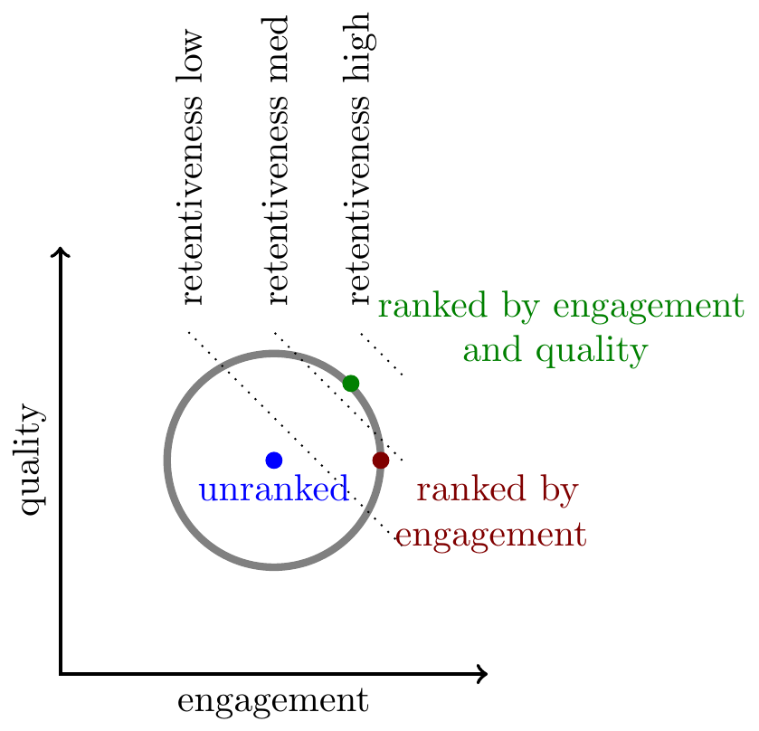

Thanks to comments from Jeff Allen, Jacquelyn Zehner, David Evan Harris, Jonathan Stray, and others. If you find this note useful for your work send me an email and tell me :)

Six observations on ranking by engagement on social media platforms:
Platforms rank content primarily by the predicted probability of engagement. Platforms choose for each user the items they are predicted to click on, or reply to, or to retweet, etc.1
Platforms rank by engagement because it increases user retention. In experiments which compare engagement-ranked feeds to unranked feeds (“chronological” feeds) the users with engagement-ranked feeds consistently show substantially higher long-run retention (DAU) and time-spent. Platforms care about engagement not in itself but as a means to an end, and when faced with a tradeoff between engagement and retention would choose retention.
Engagement is negatively related to quality. The content with the highest predicted engagement very often has low scores by various measures of objective quality: clickbait, spam, scams, misleading headlines, and misinformation. Intuitively this is because engagement only measures immediate appeal, and the most appealing content is often the most disappointing. Low quality content typically hurts retention, and as a consequence platforms often supplement their engagement-based ranking algorithms with a range of proxies for content quality.
Sensitive content is often both engaging and retentive. Engagement-ranked feeds often increase the prevalence of various types of “sensitive” content: nudity, bad language, abuse, hate speech, hyper-partisan politics, etc.. However unlike low-quality content, reducing the prevalence of sensitive content often hurts retention, implying that sensitivity is positively correlated with retention.
Sensitive content is often preferred by users. Platforms have tried out many experiments with asking users directly for their preferences over content. The results have been mixed, and platforms have often been disappointed to find that users express fairly positive attitudes towards content that the platform considers sensitive.
Platforms don’t want sensitive content but don’t want to be seen to be removing it. Platform decision-makers often have principled reasons for limiting the distribution of certain types of sensitive content. Additionally there are instrumental reasons: sensitive content attracts negative attention from the media, advertisers, app stores, politicians, regulators, and investors. But platforms are also hesitant to directly target this content, especially when it has some political dimension. As a consequence platforms often target sensitive content indirectly by using proxies, and they prefer to justify their decision-making by appealing to user preferences or to user retention.
1 In this note I’m using “engagement” to refer to individual actions not user-level metrics like time-spent or DAU.

In an appendix I formalize the argument. I show that all these observations can be expressed as covariances between different properties of content, e.g. between the retentiveness, predicted engagement rates, and other measures of content quality. From those covariances we can derive Pareto frontiers and visualize how platforms are trading-off between different outcomes.
Argument in Detail
I will bucket attributes of content into five types
- Engagement: the predicted probability of a user clicking, commenting, retweeting, etc., on a specific piece of content.
- Retentiveness: the causal contribution of seeing the content on a specific user’s long-term retention (e.g. DAU). Unlike the other attributes this can never be directly observed, only inferred from experiments.
- Quality: some objective measure of quality, e.g. whether fact-checked, whether the headline is misleading, whether the linked website has a high ad-load, whether the source is trustworthy, etc..
- Sensitivity: whether the content could be offensive, harmful, corrosive – e.g. nudity, bad language, abuse, hate speech.
- Preference: the user’s response to a survey question, e.g. “do you want to see more of this type of content?”
Note that “quality” and “sensitivity” apply to individual pieces of content, while the other three attributes apply to relationship between a user and a piece of content.
Predicted engagement rates are mostly historical engagement rates
In many cases the most important predictors of whether a user will engage with a piece of content are (1) this user’s historical rate of engagement on similar pieces of content (e.g. content from the same author, or of the same media-type); (2) other users’ rate of engagement on this piece of content. Platforms do use more complicated models (embeddings and neural nets), those models typically are most valuable for qualitatively new types of content, when you have relatively sparse historical data either on the user or on the item.4
4 See discussion below of Covington et al. (2016) which describes an architecture commonly used in recommenders.
Platforms care primarily about long-run retention, engagement is a means to that end
The outcome that leadership care about the most is long-run retention, measured with metrics like Daily Active Users (DAU).5 They would generally sacrifice substantial amounts of engagement in return for DAU. They also would sacrifice substantial short-term DAU if it could be shown with confidence that it would lead to higher long-term DAU.
5 Most publicly-traded platforms report in their quarterly earnings just one non-financial metric: the number of active users (DAU/MAU/mDAU, etc.). I do not know of any company that publicly reports a metric of aggregate engagement.
This point is often unclear because many changes to ranking (as measured in experiments) move engagement and retention in the same direction, and move short-run and long-run metrics in the same direction, meaning that we cannot easily tell which metric is decisive. Individual teams are often given targets to increase short-term engagement but that is mainly because that metric is easier to measure.
Engagement-ranked feeds have substantially higher long-term retention and time-spent than chronologically-ranked feeds
Users who are given engagement-ranked feeds in experiments typically have higher long-term DAU by single-digit percentages (1%-9%), and higher long-term time-spent by double-digit percentages (10%-99%). Accounting for network effects makes the aggregate difference even larger.6.
6 Huszár et al. (2022) note that since Twitter introduced a ranked timeline in 2016 they maintained an experiment with 1% of users with a chronological feed.
Meta 2020 experiments with chronological ranking showed a 20% time-spent decline on Facebook and a 10% decline on Instagram. The experiments ran for 3 months and they reported the average effect over the whole period, it is likely that the time-spent effects continued declining. The effects on DAU were not reported. See Guess et al. (2023).
A Facebook 2018 experiment showed a 3% decline in time-spent after 10 days. The effects on time-spent seemed to be linearly trending down at the time the analysis was posted. Engagement (MSI) declined by about 20%, and politics impression reduced by 15% (the share of politics impressions is more complicated to calculate but seems unambiguously down). The effects on DAU were not reported (source.). The experiment was not on a purely chronological feed: they retained “diversity rules, client-side ranking, read-state logging, comment-bumping” as well as integrity ranking rules.
Engaging content is often low quality
Despite the positive relationship between engagement and retention, many studies have found that highly-engaging content is has lower-than-average quality:
- In summer 2016 half of Facebook’s most-seen posts related to the US election were misinformation. As reported by Craig Silverman at Buzzfeed. This exceeds the average rate of misinformation, i.e. the most-engaging posts have a much lower-than-average quality.
- In 2019 Facebook’s top group and pages were run by troll farms. A series of internal analyses by by Jeff Allen (subsequently leaked) found that a substantial share of Facebook’s top pages, groups, and posts, were run by “troll farms,” whose main tactic was reposting copied content that had high engagement rates.
- In 2019 Facebook’s high-quality content received lower engagement. In the late 2010s Facebook maintained an internal “quality” score for content (FUSS=“Feed Unified Scoring System”). A data scientist’s analysis from 2019 (subsequently leaked, see p.10) found that low-quality content had significantly higher predicted engagement rates.7
- In 2021 Facebook’s most-viewed posts were very low quality. Since early 2021 FB has been releasing a dataset of their 20 most-viewed links and posts. An Integrity Institute analysis by Jeff Allen has found that each quarter 60-80% of the posts fail some basic checks, either “the account behind it is anonymous, is posting unoriginal content, using spammy page or group networks, or if the post or link violated Facebook’s community standards.”
- In 2020 Twitter’s ranking has mixed effects on political content. Huszar et al. (2021) compare political content of users who are randomized to ranked vs chronological feeds. They report (1) for political parties, ranked feed tends to amplify the right-wing parties somewhat more than left-wing parties (but the same does not hold for individual politicians); (2) for US media sources, ranked feed amplifies “sources that are more partisan compared to ones rated as center”.8
- In 2020 FB and IG chronological-ranking experiments showed a 5-15% increase in political content. Guess et al. (2023) found that replacing feed-ranking algorithms with simple chronological ranking (i.e., the most-recent posts are shown first) for 3 months (1) the share of impressions that were classified as political increased by 15% on Facebook and by 5% on Instagram, the share that were classified as “political news” increased by 40% on Facebook.
7 These correlations can be difficult to interpret: suppose there is no correlation between engagement and quality in the pool of all available content, there will nevertheless be a negative correlation among the subset of content that is seen if the ranking algorithm penalizes low-quality content, meaning low-engagement low-quality content will never be shown to users. It is unclear from the document whether the correlation is among content that is available, or content that is seen.
8 Bakshy et al. (2015) found that Facebook’s feed-ranking doesn’t substantially change the share of cross-cutting (across-the-aisle) content seen.
Many platforms have found that increasing quality helps retention
Platforms have tried to address quality problems by defining measures of objective quality:
Facebook uses many heuristics and classifiers to identify various types of low-quality content: Facebook identifies and downranks, among other things, engagement bait, links that go to ad-farms, scraped content, titles that withhold information, and titles that exaggerate information. In each case these types of content would generate high engagement but give users a bad experience, and in most cases experiments confirmed that dowranking these types of content increases long-run user retention.
Facebook uses some metadata features to identify low-quality content. E.g. Facebook calculates the “click gap” (the amount of organic traffic a website gets) and “broad trust” (diversity of engagement across users).
YouTube has introduced a series of quality adjustments to ranking: E.g. downranking “sensationalistic tabloid content” and upranking “authoritative content”.
Some companies have also shifted engagement weights to put relatively more weight on “deeper” measures of engagement:
- In 2012 YouTube switched from maximizing clicks to maximizing watch-time. They found it led to a short-term decrease in clicks but a long-term increase in retention. I believe Netflix similarly has invested a lot of time in developing “deep” measures of engagement.
Quality also helps the producer ecosystem.
There is an additional reason for prioritizing the quality of content independent of the direct effect on user retention: because prioritizing high-quality content helps foster a long-run community of creators.
A central fact about social media is that it relies on a tremendous amount of uncompensated labor. Most content is created for the joy of creation, with little realistic expectation of financial return. The impulse to post clearly relies on a delicate social perception or norm, and a platform could inadvertantly break this spell. I think speaking loosely Facebook mismanaged their public-content ecosystem in this way: they alienated creators in a variety of ways, especially by allowing copied content to proliferate, and high-quality creators instead posted to Instagram, Twitter, YouTube, and Tik Tok. Facebook leadership tried to attract creators with various monetary incentives but they often backfired: creators who are financially-motivated are often not the creators you want.
Engagement measures immediate quality, and hence is a poor proxy for the quality of factual claims
Engagement necessarily measures the immediate reaction of a user to a piece of content, and thus ranking by predicted engagement will surface content that appears to be good. This is fine when there is no hidden aspect to quality, e.g. for jokes and pictures which mostly be judged in the moment. However if we rank informational content by predicted engagement it will tend to surface the claims that are the most sensational or intriguing independent of whether they are true.
If apples were sold only by how they looked, and not by how they tasted, then we would be offered delicious-looking and bland-tasting apples.
I believe this basic mechanism explains why internet platforms typically have higher rates of exaggerated, misleading, or false content compared to traditional media (newspapers, television, etc.). Traditional media do not publish whichever headlines would maximize short-run sales because that would harm long-run sales. This also explains why platforms have found that they can substantially improve retention by building proxies for quality.
A negative relationship between engagement and quality can be caused by unscrupulous publishers
Suppose each publisher can produce a fixed number of headlines, which will vary in (1) the headline’s propensity to be clicked, and (2) whether the headline is true. There are two types of publishers:
- Honest publishers: they choose the most-engaging headlines from within the subset that are true.
- Dishonest publishers: they choose the most-engaging headlines from the universe of all possible headlines (irrespective of truth).
In this world the most-engaging headlines will be disproportionately false compared to the average headline. In the long run consumers will learn some skepticism, and to discount headlines in proportion to how clickable they seem, but they are unlikely to learn to discriminate perfectly. There’s always a chance that an intriguing headline will be true, and so the negative correlation would persist in equilibrium.9
9 A more formal version: each consumer sees a single headline with observed signal \(s\) and chooses whether to click. The payoff from clicking is \(s\) if it’s from an honest publisher, zero otherwise, and there’s some stochastic outside option so the consumer’s probability of clicking is continuously increasing in the expected payoff from clicking. Honest publishers report their signals drawn from \(f_H(s)\), dishonest publishers choose any signal. In equilibrium the dishonest publishers’ signal distribution, \(f_D(s)\), must be such that all signals with non-zero mass have have an equal click-through rate, meaning there is some \(\kappa\) such that for every \(s>\kappa\), \(f_D(s)=\frac{s-\kappa}{\kappa}f_H(s)\). Thus low click-through-rate headlines (\(s<\kappa\)) are all true, but high click-through rate headlines (\(s>\kappa\)) all have some share which are false. Qualitatively: if a headline is not very interesting, then you believe it; but if it’s interesting then you discount exactly inversely to how interesting it is. In this model we have (1) retentiveness (consumer surplus) is increasing with engagement; (2) quality (truth) is decreasing with engagement; (3) retentiveness (consumer surplus) would be higher if you rank by both engagement and quality (e.g. by removing false stories).
Platforms have been slow in improving the quality of ranked content
I discuss above some examples of Facebook’s slowness in addressing problems with the quality of content. I think this slowness is for two mains reasons. First, predicting engagement is a well-defined technical problem with a track record of success while evaluating content-quality is much more open-ended and difficult to validate. Hard-headed engineers often argue that a user’s preferences are revealed in their engagement and that evaluating quality is paternalistic. Secondly, platforms are nervous of being opinionated about objective quality because they don’t wish to take sides on politically delicate issues. In 2016 Facebook was criticized for using human judgment in determining what topics are “trending”, and in the wake of that criticism many projects which involved human judgment were shut down and replaced with automatic systems. Then in 2020 engineers on News Feed were told to avoid using words such as “trust” or “quality” or “authority”, and to instead use language that referred only to user preferences.
Sensitive content is often both engaging and retentive
I have defined “sensitive” content to include nudity, bad language, abuse, hate speech, hyper-partisan politics, etc.. Sensitive content often has higher-than-average engagement rates, and when content is demoted this often hurts retention, implying that sensitivity is positively correlated with retentiveness.
- A 2023 academic study by Beknazar-Yuzbashev et al. estimated that filtering the 7% most-toxic content on Facebook reduced overall Facebook content consumed by 20%. However the results look quite odd to me: they asked users to install a custom browser, which filtered out content. They estimate an extraordinarily high incrementality rate (greater than 2X), the dynamic treatment effects shown in Fig 13 are very weak, and I found it difficult to follow the arguments against differential attrition driving these results.
Platforms don’t want to show sensitive content
Platforms are clearly prepared to pay a cost to reduce the prevalence of sensitive content, both in terms of retentiveness (DAU), and in the monetary cost of engineers, labelers, and computation.10
10 Platforms often spend around 5% of their total costs on content moderation, despite the prevalence of sensitive content and the effects on retention typically being closer to 0.1% or less.
The platforms have many reasons for avoiding sensitive content, independent of its effect on retention, but internally there is often an ambiguity about the contribution of different reasons. In part decisions are driven by a feeling of moral duty to not amplify content that is harmful. However there are also many instrumental reasons, because sensitive content often causes friction with advertisers, app stores, regulators, media, employees and investors.
Misinformation is a somewhat special case. From what has been discussed before, misinformation can be expected to reduce retention because it’s not true. However misinformation is very often related to sensitive issues, e.g. partisan politics, race relations, vaccines, and often reports falsehoods that support the viewer’s political prejudices.
Platforms avoid directly penalizing sensitive content
Platforms are caught in a double bind: there are strong pressures to reduce the amount of sensitive content on their platform, but there is also a pressure not to be seen to be making judgments about the objective value or harm of content. They want a garden with no weeds but they also wish to have clean hands. This often causes a bifurcation between the nominal reason for a policy and the real reason. Some examples:
Platforms often downrank engagement patterns because they correlate with sensitive content. It is common to downrank posts which features a specific engagement pattern (e.g. certain types of sharing, certain types of downstream attributes), and the downranking is justified internally based on the correlation with measures of quality or sensitivity, e.g. misinformation, or hate speech, or hyperpartisan content. This is odd because it would seem to be more efficient to target the sensitive content directly, i.e. instead of downranking the proxy, use the proxy as a feature in a classifier, and downrank based on the classifier output. However platforms avoid this approach in part because they are nervous about the perception of being perceiving as judges of the quality of content.
Platforms speak about sensitivity rules as if they were adopted to serve the interests of their users. Google’s Jigsaw group has an influential set of definitions of content quality, their definition of a “toxic” comment is “a rude, disrespectful, or unreasonable comment that is likely to make people leave a discussion.” This definition is worded to presuppose that rude comments cause lower retention. The definition thus allows a platform to talk about their toxicity classifiers as if they were solely serving the interests of the users exposed to toxic language.
Survey questions are chosen based on their correlation with measures of sensitive content. Platforms will often try out multiple different wordings of a survey question and decide which one to use by comparing the results with their internal measures of content quality and sensitivity, leading to survey questions that are somewhat awkwardly worded (e.g. asking people “is this good for the world?”).
Subjective user ratings of quality have a mixed relationship with objective measures of quality
Platforms have often tried to collect explicit user feedback about quality, e.g. asking “was this worth your time?”, “do you want to see more of this?”, “was this informative?”. In my experience, for most such questions, responses are highly correlated with engagement, but often show a negative correlation with objective measures of quality. E.g. people often rate misinformation as “informative” and “worth my time.”
Nevertheless some of these initiatives have had success in raising both objective quality and retention, e.g. Facebook recently launched a prompt asking “would you like to see more posts like this?” The signal from this prompt apparently increases both retention and many objective measures of quality.
Platforms additionally care about engagement because of network effects
I said above that platforms care about engagement primarily insofar as it’s a proxy for retention, however there is an additional reason to pay attention to engagement. When one user engages (likes, comments, retweets) this increases the value of the platform to all the other users, and so has an indirect positive effect on retention. For this reason platforms are generally willing to sacrifice some retention in return for engagement, as measured in an experiment, if the sacrifice is sufficiently small.
Technical Appendix: Expressed as a Covariance Matrix
We can express most of the argument above with a covariance matrix. Given a user we can give scores to each piece of content with respect to the five attributes defined above. Then we can give a reasonable characterization of the platform ranking problem with the following covariance matrix:
| retentiveness | engagement | quality | sensitivity | preference | |
|---|---|---|---|---|---|
| retentiveness | + | + | 0 | + | |
| engagement | - | + | + | ||
| quality | 0 | 0 | |||
| sensitivity | + | ||||
| preference |
Given this covariance matrix, we can draw Pareto frontiers and indifference curves. Each Pareto frontier represents the set of achievable tradeoffs between two outcomes. I explain below how elliptical Pareto frontiers and linear indifference curves can be derived from the covariance matrix if we assume that everything is distributed joint Normally.
Retentiveness and engagement. We can draw a Pareto frontier between retention and engagement as below. We do not directly observe the retentiveness of content, but we know that ranking content by engagement (i.e. choosing the farthest right-hand point on the Pareto frontier) increases retention relative to an unranked feed, so we can infer that retentiveness and engagement are positively correlated, thus the Pareto ellipse must be upward-sloping.
Engagement and quality. As discussed above, we often see that (1) measures of content quality have zero or negative correlation with engagement, (2) downranking low-quality content (equivalently, upranking high-quality content) increases retention. This is somewhat surprising because engagement and retention have a positive correlation, meaning the three correlations are not transitive.
We illustrate the relationship with retention here with three lines representing different levels of retention, effectively these are indifference curves of a platform that is trying to maximize retention.
Engagement and sensitivity. Next consider “sensitive” attributes. We often see that more sensitive content has higher engagement rates, shown below as an upward-tilt to the Pareto frontier. In addition experiments that penalize sensitive content often have a negative effect on retention: this could be either due to a positive partial correlation between engagement and retentiveness, or a positive partial correlation between sensitivity and retentiveness. But in either case it seems that sensitive content does not have a strong negative effect on retention.
Despite these facts, most platforms still put substantial penalties on sensitive content, either directly or indirectly (as discussed above), and they pay a price in terms of both engagement and retention.
Preference and sensitivity. Finally consider a direct measure of user preference over content, e.g. asking users “is this informative?” or “would you like to see more like this?” In general user preference correlates relatively well with engagement, but it also offers incremental value for predicting retentiveness, in other words adding an additional term to the ranking function to predict user preference tends to increase retention.
However as discussed above, projects which collect survey questions are often focussed on the sensitivity of content rather than its retentiveness, and in that respect their findings are often mixed. Below we illustrate a case in which ranking by preference increases retentiveness but does not lower the amount of sensitive content (which platforms often desire). However platforms will offer try out many different wordings of survey questions, and each question will have somewhat different correlations.
Formal Observations
Here I describe a few formal properties of a model of ranking based on a joint-normal distribution of attributes. Fuller proofs of some of these results are here, other are in notes I’m preparing and available on request.
The covariance between item attributes will determine a Pareto frontier among outcomes. Suppose we know the joint distribution of attributes and we can choose a subset with share \(p\) of the distribution (e.g. a fixed number of impressions given a pool of possible stories to show), and we want to calculate the average value of each attribute in the subset of content shown to the user. Then we can describe the Pareto frontier over subsets, i.e. the set of realized average outcomes, and it will be a function of the covariances among attributes over pieces of content. With 2 attributes the Pareto frontier will be an ellipse with shape exactly equal to an isoprobability curve from the joint density.
The shape of the ellipse has a simple interpretation. If two attributes are positively correlated then the Pareto frontier will be tight meaning there is little tradeoff, i.e. we will have similar aggregate outcomes independent of the relative weights put on each outcome in ranking. If instead two attributes are negatively correlated then the Pareto frontier will be loose meaning outcomes will vary a lot with the relative weights used in ranking.
Our assumption that the share \(p\) is fixed is equivalent to assuming that any ranking rule will get the same number of impressions. This assumption obviously has some tension with retentiveness being an outcome variable: if some ranking rule has low retentiveness, then we would expect lower impressions. Accounting for this would make the Pareto frontier significantly more complicated to model, for simplicity we can interpret every attribute except retentiveness as a short-run outcome. Alternatively we could interpret them as relative instead of absolute outcomes, e.g. as engagement/impression or engagement/DAU.
Improving a classifiers will stretch the Pareto frontier. As a classifier gets better the average prediction will stay the same but the variance will increase, meaning the Pareto frontier will stretch out, and given a linear indifference curve we can derive the effect on outcomes.
The joint distribution plus utility weights will determine ranking weights. If we observe only some outcomes then we can calculate the conditional expectation for other outcomes. Typically we want to know retentiveness, and we can write the conditional expectation as follows: \[E[\text{retentiveness}| \text{engagement},\ldots,\text{user preference}].\] This expectation has a closed-form solution when the covariance matrix is joint normal. When we have just two signals, for example engagement and quality, we can write:
\[\begin{aligned} E[r|e,q] &= \frac{1}{1-\gamma^2}(\rho_e-\gamma\rho_q)e + \frac{1}{1-\gamma^2}(\rho_q-\gamma\rho_e)q\\ r &= \text{retentiveness}\\ e &= \text{engagement (predicted)}\\ q &= \text{quality (predicted)}\\ \rho_{e} &= \text{covariance of engagement and retentiveness}\\ \rho_{q} &= \text{covariance of quality and retentiveness}\\ \gamma &= \text{covariance of engagement and quality} \end{aligned}\]Note that the slope of the iso-retentiveness line in \((e,q)\)-space will be \(-\frac{\rho_e-\gamma\rho_q}{\rho_q-\gamma\rho_e}\).
Experiments which vary ranking weights tell us about covariances. We can write findings from experiments as follows. First, suppose we find that retention is higher when ranked by engagement than when unranked, this can be written:
\[\begin{aligned} \utt{E[r|e>e^*]}{ranked by}{engagement} &> \ut{E[r]}{unranked} \end{aligned}\]Here \(e^*\) is chosen such that \(P(e>e^*)=p\) for some \(p\), representing the share of potential inventory that the user consumes. This implies that engagement must positively correlate with retentiveness, \(\rho_e>0\).
Next we can express that retention is higher when we put some weight \(\beta\) on quality:
\[\begin{aligned} \utt{E[r|e+\beta q>\kappa^*]}{ranked by}{engagement and quality} &> \utt{E[r|e>e^*]}{ranked by}{engagement} \end{aligned}\]Here \(\kappa^*\) is chosen such that \(P(e+\beta q > \kappa^*)=P(e>e^*)=p\). If \(\beta\) is fairly small then we can infer that the iso-retentiveness line is downward-sloping, implying: \[\frac{\rho_e-\gamma\rho_q}{\rho_q-\gamma\rho_e}>0.\]
This implies that both engagement and quality have the same sign. I don’t think they both can be negative, so they both must be positive:
\[\begin{aligned} \rho_e - \gamma \rho_q &> 0 \\ \rho_q - \gamma \rho_e &> 0. \end{aligned}\]I think it’s reasonable to treat preferences as locally linear. To have a well-defined maximization problem (with an interior solution) we need either nonlinear preferences or a nonlinear Pareto frontier. It’s always easier to treat things as linear when you can, so a relevant question is which of these two is closer to linear? Internally companies often treat their preferences as nonlinear, e.g. setting specific goals and guardrails, but those are always flexible and often have justifications as incentive devices. Typical metric changes are small, only single-digit percentage points, over that range the Pareto frontier does show significant diminishing returns while (it seems to me) value to the company does not.
Appendix: Literature on Ranking and Recommendation
Overviews of Recommender Systems (chronological)
- Adomavicius and Tuzhilin (2005) “Toward the Next Generation of Recommender Systems: A Survey of the State-of-the-Art and Possible Extensions”
- An influential overview of recommender systems (14,000 citations!). The canonical example is recommending movies to get the highest predicted rating. They use “rating” as similar to “engagement”. A more recent survey is Roy and Dutta (2022).
- Davidson et al. (2010) “The YouTube Video Recommendation System”
-
“[videos] are scored and ranked using … signals [which] can be broadly categorized into three groups corresponding to three different stages of ranking: 1) video quality, 2) user specificity and 3) diversification.””
-
“The primary metrics we consider include click through rate (CTR), long CTR (only counting clicks that led to watches of a substantial fraction of the video), session length, time until first long watch, and recommendation coverage (the fraction of logged in users with recommendations).”
-
They say recommendations are good because they have high click-through rate. - A blog post from 2012 discusses a switch from views to watch time: “Our video discovery features were previously designed to drive views. This rewarded videos that were successful at attracting clicks, rather than the videos that actually kept viewers engaged. (Cleavage thumbnails, anyone?)”
- Gomez-Uribe and Hunt (2015) “The Netflix Recommender System: Algorithms, Business Value, and Innovation”
- Clearly states that they evaluate AB tests using engagement, but it is regarded as an imperfect proxy for retention:
-
“we have observed that improving engagement—the time that our members spend viewing Netflix content—is strongly correlated with improving retention. Accordingly, we design randomized, controlled experiments … to compare the medium-term engagement with Netflix along with member cancellation rates across algorithm variants. Algorithms that improve these A/B test metrics are considered better.”
Covington et al. (2016) “Deep Neural Networks for YouTube Recommendations”
This paper proposed a very influential architecture for content recommendation (the paper has 3000 citations). They say:
“Our final ranking objective is constantly being tuned based on live A/B testing results but is generally a simple function of expected watch time per impression. Ranking by click-through rate often promotes deceptive videos that the user does not complete (“clickbait”) whereas watch time better captures engagement”
Lada, Wang, & Yan (2021, FB Blog) How does news feed predict what you want to see?
- Thorburn, Bengani, & Stray (2022, Understanding Recommenders) “How Platform Recommenders Work”
-
This is an excellent short article with description and illustration of the stages in building a slate of content: moderation, candidate generation, ranking, and reranking. Includes links to many posts from platforms describing their systems.
- Arvin Narayanan (2023) “Understanding Social Media Recommendation Algorithms”
-
A good overview of recommendation algorithms, with an in-depth discussion of Facebook’s MSI.
-
Criticisms of social media recommendation: (1) harm users because “implicit-feedback-based feeds cater to our basest impulses,” (2) harm creators because “engagement optimization … is a fickle overlord,” (3) harms society because “social media platforms are weakening institutions by undermining their quality standards and making them less trustworthy. While this has been widely observed in the case of news … my claim is that every other institution is being affected, even if not to the same degree.”
-
The technical part of the essay is excellent but I found some of the arguments about harm and social effects hard to follow.
Kleinberg, Mullainathan, and Raghavan (2022)
Proposals for Change (chronological)
- Andrew Mauboussin (2022, SurgeAI) “Moving Beyond Engagement: Optimizing Facebook’s Algorithms for Human Values”
- Says that the problem is “the most engaging content is often the most toxic.” They propose using human raters, e.g. ask people “did this post make you feel closer to your friends and family on a 1-5 scale?” They label a small set of FB posts as a proof of concept.
- Bengani, Stray, & Thorburn (2022,Medium) “What’s Right and What’s Wrong with Optimizing for Engagement”
- They define engagement as “a set of user behaviors, generated in the normal course of interaction with the platform, which are thought to correlate with value to the user, the platform, or other stakeholders.” Reviews evidence for good and bad effects of ranking by engagement.
Ovadya & Thorburn (2023). Bridging Systems: Open Problems for Countering Destructive Divisiveness across Ranking, Recommenders, and Governance
- Stray, Iyer, Larrauri (2023) “The Algorithmic Management of Polarization and Violence on Social Media”
-
- Our overall goal should be to minimize “destructive conflict”.
-
- The major lever used has been content moderation: changing the visibility of content based on semantic criteria (e.g. downranking toxic, disallowing hate speech).
-
- However we should put relatively more work on system design, e.g. adding friction or changing the mechanics of sharing or engagement-based ranking. In part because there’s a robust correlation between content that causes destructive conflict and content that is engaging.
Milli, Belli, and Hardt (2021) (2021) “From Optimizing Engagement to Measuring Value”
- Milli, Pierson and Garg (2023) Choosing the Right Weights: Balancing Value, Strategy, and Noise in Recommender Systems
-
I find the model a little hard to follow.
- Lubin & Gilbert (2023) “Accountability Infrastructure: How to implement limits on platform optimization to protect population health”
-
A very wide-ranging and loose discussion of issues related to ranking content. Makes an analogy with 19th century measures to control public health. I think the main proposal is that firms come up with metrics to measure their effect on social problems such as mental health, and regularly report on how they’re doing. They suggest requirements for platforms of different sizes:
-
1M+ Submitted plan for metrics and methods for evaluation of potential structural harms 10M+ Consistent data collection on potential structural harms 50M+ Quarterly, enforceable assessments on product aggregate effects on structural harms, with breakouts for key subgroups 100M+ Monthly, enforceable assessments on product aggregate effects as well as targeted assessments of specific product rollouts for any subproduct used by at least 50 million users, with breakouts for key subgroups
Appendix: Taxonomy of Metrics
This is meant to be a parsimonious taxonomy of metrics used in a recommender. They are organized by the the types of entity they apply to. For simplicity I omit aggregations (e.g. a user’s like rate is just the average over likes over user-item pairs), and I omit predictions (e.g. an item’s pToxic is just the prediction of whether a paid rater would rate the item as toxic).
| entity | type of metric | metric |
|---|---|---|
| user | activity | login (DAU/DAP) |
| time spent | ||
| evaluation | survey (“are you satisfied?”) | |
| item | paid rater | policy-violating (“does this violate policy?”) |
| quality evaluation (“does this fit quality defn?”) | ||
| objective features | recency | |
| item contains author info | ||
| item contains link | ||
| producer | objective features | off-platform popularity |
| graph statistics | network centrality | |
| user-item | social interaction | like (heart/fav/emoji reaction) |
| comment (reply) | ||
| reshare (retweet/forward) | ||
| downstream interactions | ||
| interest signal | linger (time spent watching) | |
| click (follow link, expand) | ||
| evaluation | star-rating | |
| upvote (downvote) | ||
| survey (“did you find this worth your time?”) | ||
| see-more | ||
| dislike (see less) | ||
| other | report | |
| dislike | ||
| user-producer | interest signal | follow (subscribe, friend) |
| block | ||
References
Guess, Andrew M., Neil Malhotra, Jennifer Pan, Pablo Barberá, Hunt Allcott, Taylor Brown, Adriana Crespo-Tenorio, et al. 2023. “How Do Social Media Feed Algorithms Affect Attitudes and Behavior in an Election Campaign?” Science 381 (6656): 398–404. https://doi.org/10.1126/science.abp9364.
Huszár, Ferenc, Sofia Ira Ktena, Conor O’Brien, Luca Belli, Andrew Schlaikjer, and Moritz Hardt. 2022. “Algorithmic Amplification of Politics on Twitter.” Proceedings of the National Academy of Sciences 119 (1): e2025334119. https://doi.org/10.1073/pnas.2025334119.
Kleinberg, Jon, Sendhil Mullainathan, and Manish Raghavan. 2022. “The Challenge of Understanding What Users Want: Inconsistent Preferences and Engagement Optimization.” https://arxiv.org/abs/2202.11776.
Milli, Smitha, Luca Belli, and Moritz Hardt. 2021. “From Optimizing Engagement to Measuring Value.” In Proceedings of the 2021 ACM Conference on Fairness, Accountability, and Transparency, 714–22.
Citation
BibTeX citation:
@online{cunningham2023,
author = {Cunningham, Tom},
title = {Ranking by {Engagement}},
date = {2023-05-08},
url = {tecunningham.github.io/posts/2023-04-28-ranking-by-engagement.html},
langid = {en}
}
For attribution, please cite this work as:
Cunningham, Tom. 2023. “Ranking by Engagement.” May 8,
2023. tecunningham.github.io/posts/2023-04-28-ranking-by-engagement.html.
Social media platforms rank their content primarily by predicted engagement
The core ranking model for most social platforms is a weighted average of predicted engagement rates.2
2 I believe this is true for almost all platforms with personalized recommendations including YouTube, Netflix, and Amazon. An excellent reference for how recommenders work, with illustrations and links, is Thorburn, Bengani, & Stray (2022) “How Platform Recommenders Work”
3 For simplicity the rest of the discussion treats the causal effect of content as purely separable.
However ranking functions also include hundreds of other tweaks incorporating non-engagement features, upranking or downranking content depending on, for example, the media type (photo/text/video), the relationship between the user and the author (whether you follow this person), various predictions of of objective quality (classifiers predicting whether the content is spam, offensive, adult, misinformation, etc.), or other features (network centrality, off-platform popularity, etc.). They also often have some diversity rules to prevent the content that is shown from being too similar.3
Ranking by popularity is common for other media: we look at lists of bestsellers, most popular, highest grossing, most watched, or top charting. Attention is limited and it would be inefficient to offer people a random selection of everything that’s available.